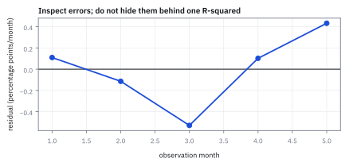
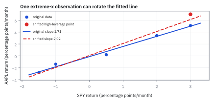

15.1 Ordinary Least Squares (OLS) Regression
เส้นตรงที่ทำให้ผลรวมของความพลาดยกกำลังสองน้อยที่สุดมี slope เท่ากับ covariance หารด้วย variance และ slope ตัวนี้คือ hedge ratio ที่ทิ้งความเสี่ยงไว้น้อยที่สุด
พอร์ตถือหุ้น AAPL มูลค่า \$1,000,000 และอยากตัดความเสี่ยงตลาดออกด้วยการ short SPY ข้อมูลที่มีคือผลตอบแทนรายเดือนห้าเดือน (ตัวเลขสมมติที่ตั้งให้คิดตามได้) เป็นคู่ (SPY, AAPL) หน่วย % ต่อเดือน: (2.0, 3.4), (−1.5, −2.8), (0.5, 0.2), (3.0, 5.1), (−1.0, −1.4) เพื่อนร่วมโต๊ะบอกว่า AAPL ขึ้นเฉลี่ยเดือนละ 0.90% ส่วน SPY 0.60% แปลว่า AAPL ไวกว่าตลาด 1.5 เท่า ให้ short SPY \$1.5 ล้าน ควรเชื่อไหม?
ลองตอบก่อนเปิดเฉลย
ไม่ควร อัตราส่วนของค่าเฉลี่ยบอกว่าสองตัวอยู่ระดับไหน ไม่ได้บอกว่าขยับไปด้วยกันแค่ไหน เส้น OLS ที่หน้านี้สร้างให้ slope 1.7075 จึงต้อง short SPY ราว \$1,707,483 ในห้าเดือนนี้ พอร์ตที่ hedge 1.5 เท่ายังเหลือความผันผวน 0.53% ต่อเดือน ส่วนที่ hedge 1.7075 เท่าเหลือ 0.35% ต่อเดือน variance ที่เหลือของแบบแรกมากกว่าแบบหลัง 2.26 เท่า
ภาพรวมก่อนลงสูตร
ตอนหา hedge ratio จาก conditional distribution ของ MVN เราได้ $\beta=\operatorname{Cov}/\operatorname{Var}$ จาก model ที่รู้ covariance อยู่แล้ว แต่บนโต๊ะจริงไม่มีใครยื่น covariance ให้ มีแต่จุดข้อมูลย้อนหลังไม่กี่จุด OLS คือวิธีเปลี่ยนจุดพวกนั้นเป็นเส้นตรงหนึ่งเส้น โดยเลือกเส้นที่ความพลาดแนวตั้งยกกำลังสองแล้วรวมกันน้อยที่สุด
ดูรูปด้านล่าง จุดดำห้าจุดคือห้าเดือน เส้นน้ำเงินคือเส้นที่ OLS เลือก ขีดแดงแนวตั้งคือความพลาดของแต่ละเดือน (residual) เส้นส้มประคือ slope 1.5 ของเพื่อนร่วมโต๊ะ ทั้งสองเส้นผ่านจุดค่าเฉลี่ยสีเขียวเหมือนกัน แต่เส้นส้มใช้ข้อมูลแค่จุดเดียวนั้น ส่วนเส้นน้ำเงินฟังทั้งห้าจุด
หน้านี้จะหาสูตรของเส้นด้วยอนุพันธ์ ลองกับห้าเดือน แสดงว่า slope ตัวเดียวกันคือ hedge ที่ดีที่สุด แบ่ง variance เป็นส่วนที่อธิบายได้กับส่วนที่เหลือ วัดว่า slope คลาดได้แค่ไหน เขียนทุกอย่างเป็น matrix เพื่อใช้กับหลายตัวแปร แล้วปิดด้วยจุดข้อมูลตัวเดียวที่หมุนเส้นทั้งเส้นได้
รูป — เส้น OLS ผ่านห้าเดือน และความพลาดแนวตั้ง
ศัพท์ที่ใช้ในหัวข้อนี้
- Regression
- การทำนายตัวแปรหนึ่ง ($y$) จากอีกตัว ($x$) ด้วยสูตรที่มี parameter ให้ประมาณจากข้อมูล ใช้ตอบคำถามว่า “ถ้า $x$ ขยับเท่านี้ $y$ มักขยับเท่าไร”
- Ordinary Least Squares (OLS)
- วิธีเลือก intercept และ slope ที่ทำให้ผลรวมของ residual ยกกำลังสองน้อยที่สุด ใช้กันมากที่สุดเพราะมีสูตรปิดที่คำนวณด้วยมือได้
- Residual
- ค่าจริงลบค่าที่เส้นทำนายในจุดเดียวกัน ใช้ดูว่าเส้นพลาดตรงไหน และความพลาดมีรูปแบบที่เส้นมองไม่เห็นหรือไม่
- $R^2$ (coefficient of determination)
- สัดส่วนของ variance ของ $y$ ในข้อมูลชุดนี้ที่เส้นอธิบายได้ ใช้บรรยายว่าเส้นเข้ากับข้อมูลเก่าแค่ไหน ไม่ได้รับรองว่าจะทำนายอนาคตได้
- Standard error (SE)
- ความผันผวนของค่าประมาณ ถ้าได้ข้อมูลชุดใหม่จากกลไกเดิมมาคำนวณซ้ำ ใช้บอกว่า slope ที่ได้คลาดจากค่าจริงได้แค่ไหน
- Leverage
- น้ำหนักที่จุดข้อมูลหนึ่งมีต่อเส้น ขึ้นกับว่า $x$ ของจุดนั้นอยู่ห่างค่าเฉลี่ยแค่ไหน ใช้หาจุดที่ตัวเดียวหมุนเส้นได้
- Design matrix
- matrix $X$ ที่คอลัมน์แรกเป็น 1 ทุกแถว (ไว้ให้ intercept) และคอลัมน์ถัดไปเป็นตัวแปรอธิบาย ใช้เขียน OLS เป็นสมการเดียวที่ขยายเป็นหลายตัวแปรได้
สัญลักษณ์และหน่วย
| สัญลักษณ์ | ความหมาย | หน่วย |
|---|---|---|
| $x_t,\ y_t$ | ผลตอบแทนของ SPY และ AAPL ในเดือน $t$ | % ต่อเดือน |
| $a,\ b$ | intercept และ slope ของเส้นที่กำลังลอง | % ต่อเดือน และไม่มีหน่วย |
| $\hat a,\ \hat b$ | intercept และ slope ที่ OLS เลือก | % ต่อเดือน และไม่มีหน่วย |
| $\hat y_t,\ e_t$ | ค่าที่เส้นทำนาย และ residual ของเดือน $t$ | % ต่อเดือน |
| $\bar x,\ \bar y$ | ค่าเฉลี่ยของห้าเดือน | % ต่อเดือน |
| $S_{xx},\ S_{xy},\ S_{yy}$ | ผลรวมกำลังสอง และผลรวมผลคูณ ของระยะห่างจากค่าเฉลี่ย | %² |
| $n$ | จำนวนเดือนที่ใช้ | นับ |
| $s_e$ | SD ของ residual หลังหัก degrees of freedom | % ต่อเดือน |
| $X,\ \mathbf y,\ \beta$ | design matrix, vector ของ $y_t$ และ vector $(a, b)$ | ตามคอลัมน์ |
ขั้นที่ 1 — นิยามเส้น นิยามความพลาด และกติกาให้คะแนน
ก่อนจะพูดว่าเส้นไหน “ดีที่สุด” ต้องตกลงกันก่อนว่าเส้นหน้าตาอย่างไร และความพลาดวัดจากอะไร สามบรรทัดนี้เป็นนิยามล้วน ยังไม่มีอะไรพิสูจน์
เราวัดความพลาดในแนวตั้ง เพราะคำถามบนโต๊ะคือ “SPY ขยับเท่านี้ AAPL ควรขยับเท่าไร” $x$ คือของที่เห็น ส่วน $y$ คือของที่ทำนาย ระยะแนวตั้งจึงเป็นความพลาดในหน่วยของสิ่งที่เราสนใจพอดี
ทำไมไม่รวม $e_t$ ตรง ๆ? เพราะเส้นแย่ ๆ ก็รวมได้ศูนย์ เส้นแนวนอน $\hat y_t=0.90$ ที่ไม่สนใจ SPY เลยมี $\sum e_t=0$ พอดี แต่ SSE ของมันคือ 43.36 การยกกำลังสองกันไม่ให้บวกกับลบหักกัน ลงโทษความพลาดก้อนใหญ่หนักกว่า และให้ฟังก์ชันเรียบที่หาอนุพันธ์ได้
กติกากำลังสองยังมีความหมายลึกกว่านั้น ถ้าต้องทาย AAPL ด้วยตัวเลขตัวเดียว $c$ กำลังสองจะเลือก $c=\bar y=0.90$ (ผลรวม 43.36) ส่วนค่าสัมบูรณ์จะเลือก median 0.20 (ผลรวมระยะ 12.70 เทียบ 13.40 ที่ 0.90) กำลังสองจึงพาไปหาค่าเฉลี่ย และ OLS ก็คือการหาค่าเฉลี่ยของ $y$ เมื่อรู้ $x$ ถ้าความพลาดเป็น Normal การเลือกเส้นที่ทำให้ข้อมูลน่าเกิดขึ้นที่สุดก็ได้เส้นเดียวกันพอดี เพราะ log ของ density Normal คือค่าคงที่ลบ $e^2/(2\sigma^2)$
ขั้นที่ 2 — ตั้งความชันทิศ a เป็นศูนย์: เส้นต้องผ่านจุดค่าเฉลี่ย
SSE เป็นผลรวมของพจน์กำลังสอง จึงเป็นชามหงายในระนาบ $(a, b)$ ก้นชามอยู่ตรงที่ความชันเป็นศูนย์ทั้งสองทิศ (เงื่อนไขอันดับหนึ่ง: gradient เป็นศูนย์ที่จุดต่ำสุด) เริ่มจากทิศ $a$ ก่อนเพราะได้ผลที่อ่านง่ายที่สุด
หารด้วย $-2$ แล้วแยกผลรวมออกเป็นสามก้อน ก้อนกลางคือ $a$ บวกกัน $n$ ครั้ง หารทั้งสมการด้วย $n$ ก็ได้บรรทัดสุดท้าย ความหมายคือเส้นที่ดีที่สุดต้องผ่านจุด $(\bar x,\bar y)$ เสมอ ไม่ว่า slope จะเป็นเท่าไร นี่คือจุดเขียวที่ทั้งสองเส้นในรูปภาพรวมผ่าน
บรรทัดแรกให้ของแถมฟรี: residual ของเส้น OLS ที่มี intercept รวมกันได้ศูนย์พอดี เราจะใช้ข้อนี้ตรวจเลขตอนไล่ residual ทีละเดือน
ขั้นที่ 3 — ตั้งความชันทิศ b เป็นศูนย์: ได้ covariance หารด้วย variance
รู้แล้วว่า $a$ ต้องเป็น $\bar y-b\bar x$ แทนค่านี้ลงในสมการของทิศ $b$ จะเหลือตัวไม่รู้ตัวเดียว ให้ $S_{xy}:=\sum_t(x_t-\bar x)(y_t-\bar y)$ และ $S_{xx}:=\sum_t(x_t-\bar x)^2$
จังหวะที่คนสะดุดคือบรรทัดที่สี่และห้า: เปลี่ยน $x_t$ ข้างหน้าเป็น $x_t-\bar x$ ได้อย่างไร? ส่วนต่างของสองแบบคือ $\bar x\sum_t(y_t-\bar y)$ ซึ่งเป็นศูนย์ เพราะระยะห่างจากค่าเฉลี่ยรวมกันได้ศูนย์เสมอ การเปลี่ยนจึงเท่ากับบวกศูนย์ แต่ทำให้สูตรสมมาตรและอ่านออก
หาร $S_{xy}$ และ $S_{xx}$ ด้วย $n-1$ ทั้งคู่ จะได้ sample covariance หารด้วย sample variance ของ $x$ ตัวเดียวกับ hedge ratio ของ MVN ต่างกันแค่ที่นั่นใช้ค่าของ model ส่วนตรงนี้ใช้ค่าจากข้อมูล จุดนี้เป็นก้นชามจริงไม่ใช่ยอดเขา เพราะความโค้งทิศ $b$ คือ $2\sum_t x_t^2\gt0$
ขั้นที่ 4 — ห้าเดือนในโจทย์: จากตารางถึงขนาด hedge
โจทย์ให้อะไรมาบ้าง: SPY $x=(2.0, -1.5, 0.5, 3.0, -1.0)$ และ AAPL $y=(3.4, -2.8, 0.2, 5.1, -1.4)$ หน่วย % ต่อเดือน จับคู่เดือนต่อเดือน ตัวเลขทุกตัวหลังจากนี้มาจากสิบตัวนี้เท่านั้น เริ่มจากค่าเฉลี่ย เพราะสูตรทั้งหมดวัดระยะห่างจากค่าเฉลี่ย
| เดือน | $x_t$ | $y_t$ | $x_t-\bar x$ | $y_t-\bar y$ | ผลคูณ | $(x_t-\bar x)^2$ | $(y_t-\bar y)^2$ |
|---|---|---|---|---|---|---|---|
| 1 | 2.0 | 3.4 | 1.4 | 2.5 | 3.50 | 1.96 | 6.25 |
| 2 | −1.5 | −2.8 | −2.1 | −3.7 | 7.77 | 4.41 | 13.69 |
| 3 | 0.5 | 0.2 | −0.1 | −0.7 | 0.07 | 0.01 | 0.49 |
| 4 | 3.0 | 5.1 | 2.4 | 4.2 | 10.08 | 5.76 | 17.64 |
| 5 | −1.0 | −1.4 | −1.6 | −2.3 | 3.68 | 2.56 | 5.29 |
| รวม | 3.0 | 4.5 | 0.0 | 0.0 | 25.10 | 14.70 | 43.36 |
คำตอบ: เส้นคือ $\hat y=-0.1245+1.7075x$ ในหน่วย % ต่อเดือน AAPL ขยับราว 1.7075 เท่าของ SPY จึงต้อง short SPY ราว \$1,707,483 ต่อ AAPL \$1,000,000 ไม่ใช่ \$1.5 ล้านตามอัตราส่วนของค่าเฉลี่ย slope ไม่มีหน่วย เพราะ %² หาร %² ส่วน intercept ยังเป็น % ต่อเดือน
ตรวจเองใน 10 วินาที: สองคอลัมน์ระยะห่างรวมกันได้ 0.0 ทั้งคู่ ถ้าไม่เป็นศูนย์แปลว่าค่าเฉลี่ยผิด และ $1.7075\times0.60=1.0245$ บวก $-0.1245$ ได้ 0.90 เส้นผ่านจุดค่าเฉลี่ยตามที่อนุพันธ์ทิศ $a$ บังคับไว้
ขั้นที่ 5 — มองจากมุม hedge: slope ตัวเดียวกันทิ้งความเสี่ยงน้อยที่สุด
โจทย์เปิดเรื่องไม่ได้ถามหาเส้น มันถามหาขนาด short ลองมองจากมุม hedge ตรง ๆ: ถือ AAPL หนึ่งส่วน short SPY $h$ ส่วน ผลรวมกำลังสองของระยะห่างที่เหลือขึ้นกับ $h$ อย่างไร และ $h$ ไหนทำให้เหลือน้อยที่สุด
กระจายกำลังสองออกมาได้พหุนามดีกรีสองของ $h$ ที่เปิดขึ้น เพราะ $S_{xx}\gt0$ ก้นของมันอยู่ที่ $h^*=S_{xy}/S_{xx}$ ซึ่งคือ $\hat b$ ตัวเดิม ไม่ใช่เรื่องบังเอิญ $V(h)$ ก็คือ SSE ของเส้นที่ slope $h$ และผ่านจุดค่าเฉลี่ย การหา hedge ที่ดีที่สุดกับการหาเส้นที่ดีที่สุดจึงเป็นโจทย์เดียวกัน
หาร $V$ ด้วย $n-1=4$ แล้วถอดราก จะได้ SD ที่เหลือ: hedge 1.5 เท่าเหลือ 0.53% ต่อเดือน hedge 1.7075 เท่าเหลือ 0.35% ต่อเดือน จากเดิมที่ไม่ hedge 3.29% และ $1.135/0.502177\approx2.26$ คือตัวเลขในเฉลยโจทย์เปิดเรื่อง
รูป — ความเสี่ยงที่เหลือเป็นชามที่มีก้นเดียว
ขั้นที่ 6 — residual ทีละเดือน และสองผลรวมที่ต้องเป็นศูนย์
โจทย์ให้อะไรมาบ้าง: เส้น $\hat y_t=-0.124490+1.707483x_t$ ที่เพิ่งได้ ทางลัด $V(\hat b)$ บอกแล้วว่า SSE คือ 0.502177 แต่การคำนวณตรงทีละเดือนบอกเพิ่มว่าเดือนไหนพลาดมาก
คำตอบ: SSE เท่ากับ 0.502177 %² ตรงกับทางลัดของมุม hedge เดือนที่ 3 พลาดมากที่สุด (−0.53) และกินไป 0.2801 จาก 0.5022 หรือ 56% ของ SSE ทั้งหมด การยกกำลังสองทำให้จุดที่พลาดมากมีเสียงดังกว่าจุดอื่น
ตรวจเองใน 10 วินาที: $0.1095-0.1143-0.5293+0.1020+0.4320=-0.0001$ ต่างจากศูนย์เพราะปัดสี่ตำแหน่งเท่านั้น (โค้ดท้ายหน้าได้ $2\times10^{-16}$) สองผลรวมนี้คือสมการอนุพันธ์ทิศ $a$ และทิศ $b$ ถ้าคำนวณแล้วไม่เป็นศูนย์ แปลว่าเลขผิดก่อนจะไปเชื่ออะไรต่อ
รูป — residual รายเดือน

ขั้นที่ 7 — แบ่ง variance: ส่วนที่เส้นอธิบาย บวกส่วนที่เหลือ เหมือนพีทาโกรัส
$S_{yy}=43.36$ คือ variance ทั้งหมดของ AAPL รอบค่าเฉลี่ยก่อนมีเส้น คำถามคือเส้นกินไปเท่าไร เริ่มจากแยกระยะห่างของแต่ละเดือนเป็นสองท่อน แล้วยกกำลังสองรวมกัน
เวลายกกำลังสองผลบวกสองท่อน จะมีพจน์ไขว้ $2\sum(\hat y_t-\bar y)e_t$ บรรทัดที่สามแสดงว่ามันเป็นศูนย์ ด้วยสองผลรวมที่เป็นศูนย์ของ residual ในมุมเรขาคณิต พจน์ไขว้ศูนย์แปลว่า vector ของ residual ตั้งฉากกับ vector ของส่วนที่อธิบายได้ ความยาวกำลังสองจึงบวกกันแบบพีทาโกรัส ดังรูปสามเหลี่ยมด้านล่าง
$R^2$ คือส่วนที่อธิบายได้หารด้วยทั้งหมด และในกรณีตัวแปรเดียวเท่ากับ correlation ยกกำลังสอง ($0.994192^2$) ซึ่งก็คือ cosine กำลังสองของมุมระหว่างสอง vector ตามที่ correlation คือ cosine ของมุม ส่วน $\bar R^2$ ใช้ variance ที่หักจำนวน parameter แล้ว จึงลดลงเมื่อใส่ตัวแปรที่ไม่ช่วย
$R^2$ บอกเรื่อง hedge ได้ตรง ๆ: variance ที่เหลือหลัง hedge คือ $1-R^2=1.16\%$ ของเดิม SD ที่เหลือคือ $\sqrt{0.011582}\approx0.1076$ เท่าของเดิม $3.292\%\times0.1076\approx0.354\%$ ตรงกับมุม hedge ที่เพิ่งคำนวณ แต่ 98.84% มาจากห้าจุดกับเส้นที่มีตัวปรับสองตัว ขั้นถัดไปจะวัดว่ามันแม่นแค่ไหน
รูป — สามเหลี่ยมมุมฉากของ variance
ขั้นที่ 8 — slope คลาดได้แค่ไหน: SE, t และช่วง 95%
ห้าเดือนเป็นแค่หนึ่งตัวอย่างจากกลไกที่สร้างผลตอบแทน ถ้าได้ห้าเดือนชุดใหม่ slope จะไม่เท่าเดิม สมมติว่า $y_t=a+bx_t+\varepsilon_t$ โดย $\varepsilon_t$ อิสระกันแต่ละเดือน มี variance $\sigma^2$ เท่ากัน และมองค่า $x_t$ เป็นของที่กำหนดแล้ว
บรรทัดแรกคือสูตร $S_{xy}/S_{xx}$ ที่ตัด $\bar y$ ออก เพราะ $\sum(x_t-\bar x)\bar y=0$ เมื่อเขียนแบบนี้ $\hat b$ เป็นผลรวมถ่วงน้ำหนักของ $y_t$ ที่อิสระกัน variance จึงเป็นผลรวมของน้ำหนักยกกำลังสองคูณ $\sigma^2$ (variance ของผลรวมตัวแปรอิสระคือผลรวมของ variance) ยิ่ง $x$ กระจายกว้าง ($S_{xx}$ ใหญ่) slope ยิ่งนิ่ง
ไม่รู้ $\sigma^2$ จึงประมาณจาก residual แต่หารด้วย $n-2=3$ ไม่ใช่ 5 เพราะ residual ถูกบังคับด้วยสองสมการที่ต้องรวมได้ศูนย์ เหลืออิสระจริงแค่สามตัว เหตุผลเดียวกับตัวหาร $T-1$ ของ sample covariance ส่วน 3.182 คือค่า $t$ ที่ degrees of freedom 3 สำหรับ confidence interval 95%
ช่วงนี้แปลเป็นขนาด short ได้ \$1,367,881 ถึง \$2,047,085 กว้างกว่า \$679,000 ทั้งที่ $R^2$ สูงถึง 98.84% และ $t=16$ บอกแค่ว่า slope ไม่ใช่ศูนย์ ไม่ได้บอกว่ารู้ค่ามันแม่น สิ่งที่ทำให้ช่วงแคบลงได้คือข้อมูลเพิ่ม
รูป — เส้นทุกเส้นที่ห้าเดือนนี้ยังยอมรับ
ขั้นที่ 9 — เขียนเป็น matrix: สมการเดียวสำหรับกี่ตัวแปรก็ได้
model หลายปัจจัย จะมีตัวแปรอธิบายสี่ตัว การแก้อนุพันธ์ทีละทิศจะยาวเกินไป วางข้อมูลเป็น matrix แล้วทำขั้นตอนเดิมครั้งเดียว ใช้สูตรอนุพันธ์ของ quadratic form จาก gradient และเงื่อนไขอันดับหนึ่ง
อ่านสองแถวของ $X^{\mathsf T}X\hat\beta=X^{\mathsf T}\mathbf y$ ออกมาจะได้ $5a+3b=4.5$ ซึ่งคือสมการ $\sum y_t=na+b\sum x_t$ ของทิศ $a$ และ $3a+16.5b=27.8$ ซึ่งคือ $\sum x_ty_t=a\sum x_t+b\sum x_t^2$ ของทิศ $b$ ไม่มีอะไรใหม่ แค่จัดเก็บให้เป็นระเบียบ สมการ $X^{\mathsf T}(\mathbf y-X\hat\beta)=0$ ยังอ่านเป็นเรขาคณิตได้: residual ตั้งฉากกับทุกคอลัมน์ของ $X$ ค่าที่เส้นทำนาย $\hat{\mathbf y}=X\hat\beta$ จึงเป็นเงาที่ตั้งฉาก (projection) ของ $\mathbf y$ ลงบนพื้นที่ที่คอลัมน์ของ $X$ กาง และถ้าเปลี่ยนหน่วยหรือผสมคอลัมน์ใหม่แต่ยังกางพื้นที่เดิม เงานี้ก็ไม่เปลี่ยน
บรรทัดสุดท้ายมาจากการแทน $\mathbf y=X\beta+\varepsilon$ ลงในสูตร ได้ $\hat\beta=\beta+(X^{\mathsf T}X)^{-1}X^{\mathsf T}\varepsilon$ ช่องล่างขวาของ inverse คือ $5/73.5=1/14.70$ ตรงกับ $\sigma^2/S_{xx}$ ของ slope เมื่อครู่ ช่องบนซ้ายคือ $16.5/73.5\approx0.2245=1/n+\bar x^2/S_{xx}$ ซึ่ง หน้า CAPM จะใช้วัดว่า alpha คลาดได้แค่ไหน
matrix นี้หา inverse ได้ก็ต่อเมื่อ determinant ไม่เป็นศูนย์ และ $\det=n\sum x_t^2-(\sum x_t)^2=nS_{xx}=5(14.70)$ พอดี ถ้า SPY เท่ากันทุกเดือน $S_{xx}=0$ ข้อมูลก็บอก slope ไม่ได้ ซึ่งคือเรื่อง rank และ invertibility เมื่อคอลัมน์เกือบซ้ำกัน inverse จะพองและ SE พองตาม เมื่อมี $K$ ตัวแปร สมการหน้าตาเดิม แค่ $X$ มี $K+1$ คอลัมน์
ขั้นที่ 10 — จุดเดียวหมุนเส้นได้: leverage
ถ้าเดือนหนึ่งบันทึกผิด หรือเป็นเดือนวิกฤตที่ไม่เหมือนเดือนอื่น slope จะเปลี่ยนเท่าไร? สูตร $\hat b=\sum_t(x_t-\bar x)y_t/S_{xx}$ ตอบได้ทันที เพราะ $\hat b$ เป็นผลรวมเชิงเส้นของ $y_t$ ขยับ $y_k$ ตัวเดียวไป $\Delta y_k$ แล้วดูว่า $\hat b$ ขยับตาม
AAPL เดือนเดียวขยับขึ้น 1.9 จุดเท่ากัน แต่ผลต่อ slope ต่างกัน 24 เท่า เดือนที่ 4 มี SPY +3.0 อยู่ห่างค่าเฉลี่ย 2.4 จึงดึง slope จาก 1.7075 เป็น 2.0177 ขนาด short เพิ่มราว \$310,204 ส่วนเดือนที่ 3 มี SPY 0.5 อยู่แทบตรงค่าเฉลี่ย ขยับเท่าไรก็แทบไม่หมุนเส้น เหมือนคานกระดก: จุดหมุนอยู่ที่ค่าเฉลี่ย ยิ่งไกลจุดหมุน แรงเท่ากันยิ่งหมุนได้มาก
$h_k$ คือ leverage ของเดือน $k$ ซึ่งก็คือแนวทแยงของ matrix projection $X(X^{\mathsf T}X)^{-1}X^{\mathsf T}$ รวมทุกเดือนได้ 2 เท่ากับจำนวน parameter ค่าเฉลี่ยจึงเป็น $2/5=0.4$ เดือนที่ 4 ได้ 0.59 เกือบ 1.5 เท่าของค่าเฉลี่ย ส่วนเดือนที่ 3 ได้แค่ 0.20 ซึ่งเป็นค่าต่ำสุดที่เป็นไปได้ $1/n$ เดือนที่ leverage สูงแบบนี้ต้องตรวจก่อนนำ hedge ratio ไปใช้
รูป — จุดปลายช่วงหมุนเส้นได้

ความผิดที่ให้คำตอบผิดโดยไม่มี error ขึ้น
เดือนไม่ตรงกัน: ถ้าไฟล์หนึ่งเลื่อนไปหนึ่งแถว จับ AAPL เดือน $t$ คู่กับ SPY เดือน $t-1$ สี่คู่ที่เหลือให้ slope −0.75 และ $R^2$ 0.18 hedge กลับทิศกลายเป็นซื้อ SPY แทน short ทั้งที่โปรแกรมรันผ่านทุกบรรทัด ตรวจวันที่ของทั้งสองคอลัมน์ก่อนคำนวณเสมอ
ถดถอยกลับด้าน: ถดถอย SPY บน AAPL ได้ slope $25.10/43.36\approx0.5789$ กลับเศษเป็นส่วนได้ 1.7275 ไม่ใช่ 1.7075 เพราะมันวัดความพลาดแนวนอน ซึ่งตอบคำถามว่า “เห็น AAPL แล้วทาย SPY” ขนาด hedge ต่างไปราว \$20,000 สองเส้นทับกันก็ต่อเมื่อ $R^2=1$ เลือกให้ตัวที่จะถูก hedge อยู่ทางซ้ายของสมการเสมอ
หน่วยของ intercept: ถ้าข้อมูลเป็นทศนิยมแทน % slope ยังเป็น 1.7075 และ $t$ ยังเป็น 16.00 แต่ intercept กลายเป็น −0.001245 ต่อเดือน ส่วน SSE คูณ $10^{-4}$ อ่าน −0.001245 เป็น % จะทำให้ intercept ผิดไป 100 เท่า ซึ่ง CAPM จะเรียกตัวเลขนี้ว่า alpha
ถดถอยระดับราคาแทนผลตอบแทน: ราคาสองเส้นที่มี trend ให้ $R^2$ สูงได้แม้ไม่เกี่ยวกันเลย และ SE ของ slope จะเล็กเกินจริงมาก เพราะความพลาดของเดือนติดกันไม่อิสระ spurious regression วัดขนาดของความผิดนี้ด้วยตัวเลข
ความผันผวนไม่คงที่: ถ้าเดือนวิกฤตมีความพลาดใหญ่กว่าเดือนปกติหลายเท่า สูตร SE ข้างบนจะผิด และเดือนเสียงดังจะคุมเส้น วิธีแก้มาตรฐานคือถ่วงน้ำหนักแต่ละเดือนด้วยหนึ่งหาร variance ของความพลาดเดือนนั้น (weighted least squares) ซึ่งเท่ากับหาร $y_t$ และแถวของ $X$ ด้วย SD ของความพลาดก่อน แล้วทำ OLS ตามปกติ
ใช้ทำอะไรบนโต๊ะจริง
slope ของผลตอบแทนหุ้นบนผลตอบแทนตลาดคือ beta ที่ใช้ตั้งขนาด hedge และรายงาน exposure (CAPM: beta และ alpha) regression หลายตัวแปรแยกผลตอบแทนของกองทุนออกเป็น factor ต่าง ๆ (model หลายปัจจัย) slope ของ log ราคาสองหุ้นคือ hedge ratio ของ pairs trading และ regression ของผลตอบแทนเดือนหน้าบนสัญญาณเดือนนี้คือขั้นแรกของการทดสอบกลยุทธ์ ซึ่ง spurious regression และ overfitting เตือนว่าหลอกได้ง่ายแค่ไหน งาน risk model ขนาดใหญ่ยังใช้ OLS แบบถ่วงน้ำหนักข้ามหุ้นหลายพันตัวในแต่ละวัน (cross-sectional regression)
โจทย์ตรวจความเข้าใจ
1. ถดถอย SPY บน AAPL ด้วยข้อมูลห้าเดือนเดิม slope เป็นเท่าไร คูณกับ 1.7075 ได้อะไร และทำไม
เฉลย
slope คือ $S_{xy}/S_{yy}=25.10/43.36\approx0.578875$ คูณกับ $S_{xy}/S_{xx}$ ได้ $S_{xy}^2/(S_{xx}S_{yy})=630.01/637.392\approx0.988418$ ซึ่งคือ $R^2$ สอง slope ใช้ $S_{xy}$ ตัวเดียวกัน ต่างกันแค่ตัวหาร ผลคูณจึงตัดเหลือ correlation ยกกำลังสอง
2. ถ้าเก็บผลตอบแทนเป็นทศนิยม (0.020 แทน 2.0) $\hat a$, $\hat b$, SSE, $R^2$ และ $t$ ของ slope เปลี่ยนอย่างไร
เฉลย
ทุกตัวแปรหารด้วย 100 slope เป็นอัตราส่วนของ %² ต่อ %² ตัวหารตัดกัน จึงยังเป็น 1.707483 และ $R^2$ ยัง 0.988418 intercept หารด้วย 100 เป็น −0.001245 SSE หารด้วย $100^2$ เป็น 0.0000502177 และ SE ของ slope ไม่เปลี่ยน $t$ จึงยัง 16.00
3. ตัดเดือนที่ 3 ซึ่งพลาดมากที่สุดทิ้ง เหลือสี่เดือน slope, $R^2$ และช่วง 95% เป็นเท่าไร ช่วงแคบลงมากไหม
เฉลย
สี่เดือนเหลือ $\bar x=0.625$, $\bar y=1.075$, $S_{xy}=25.0125$, $S_{xx}=14.6875$ ได้ slope $\approx1.702979$ intercept $\approx0.010638$ และ $R^2\approx0.996450$ SSE $\approx0.151745$ หารด้วย $n-2=2$ ได้ SE $\approx0.071873$ แต่ค่า $t$ ที่ degrees of freedom 2 คือ 4.303 ช่วงจึงเป็น $[1.3937, 2.0122]$ กว้าง 0.62 เทียบเดิม 0.68 แคบลงนิดเดียว การตัดจุดที่ไม่ชอบทำให้ $R^2$ สวยขึ้น แต่ความรู้ไม่ได้เพิ่ม และ slope ขยับแค่ 0.0045 เพราะเดือนที่ 3 มี leverage ต่ำ
คำนวณซ้ำด้วย JavaScript
รันใน Node.js ได้โดยไม่ต้องติดตั้งอะไร โค้ดคำนวณจากข้อมูลห้าเดือนตรง ๆ สองทาง คือสูตร $S_{xy}/S_{xx}$ และการแก้ $X^{\mathsf T}X\hat\beta=X^{\mathsf T}\mathbf y$ ตรวจว่าข้อมูลยาวเท่ากัน เป็นตัวเลขจริง มีอย่างน้อยสามคู่ และ $x$ ไม่คงที่ ค่า $t$ วิกฤตคำนวณจากสูตรอนุกรมของ Student t แล้วพิมพ์ผลทุกขั้นเป็น JSON บรรทัดเดียว
เปิดดูโค้ด
function checkPairs(x, y) {
if (!Array.isArray(x) || !Array.isArray(y) || x.length !== y.length) {
throw new TypeError('x and y must be arrays of the same length');
}
if (![...x, ...y].every(Number.isFinite)) throw new TypeError('x and y must hold finite numbers');
if (x.length < 3) throw new RangeError('Need at least three pairs: two numbers are fitted, one is left for error');
if (x.every(v => v === x[0])) throw new RangeError('x never changes, so the slope is undefined');
}
function sums(x, y) {
const n = x.length, xbar = x.reduce((s, v) => s + v, 0) / n, ybar = y.reduce((s, v) => s + v, 0) / n;
let Sxy = 0, Sxx = 0, Syy = 0;
for (let t = 0; t < n; t++) {
const dx = x[t] - xbar, dy = y[t] - ybar;
Sxy += dx * dy; Sxx += dx * dx; Syy += dy * dy;
}
return {n, xbar, ybar, Sxy, Sxx, Syy};
}
// Two-sided 95% critical value of Student t, from the finite series for P(|T| <= t) with integer dof.
function tCritical(dof) {
if (!Number.isInteger(dof) || dof < 1) throw new RangeError('Degrees of freedom must be a positive integer');
const inside = t => {
const th = Math.atan(t / Math.sqrt(dof)), c = Math.cos(th), s = Math.sin(th);
let term = dof % 2 ? c : 1, sum = dof === 1 ? 0 : term;
for (let k = dof % 2 ? 3 : 2; k <= dof - 2; k += 2) { term *= (k - 1) / k * c * c; sum += term; }
return dof % 2 ? 2 / Math.PI * (th + s * sum) : s * sum;
};
let lo = 0, hi = 1000;
for (let i = 0; i < 100; i++) { const mid = (lo + hi) / 2; if (inside(mid) < 0.95) lo = mid; else hi = mid; }
return (lo + hi) / 2;
}
function fitLine(x, y) {
checkPairs(x, y);
const S = sums(x, y), n = S.n, b = S.Sxy / S.Sxx, a = S.ybar - b * S.xbar;
const fitted = x.map(v => a + b * v), residuals = y.map((v, t) => v - fitted[t]);
const sse = residuals.reduce((s, e) => s + e * e, 0);
const s = Math.sqrt(sse / (n - 2)); // two fitted numbers use up two degrees of freedom
const seB = s / Math.sqrt(S.Sxx), seA = s * Math.sqrt(1 / n + S.xbar ** 2 / S.Sxx), tCrit = tCritical(n - 2);
return {...S, a, b, fitted, residuals, sse, ssr: b * S.Sxy, r2: 1 - sse / S.Syy,
adjR2: 1 - (sse / (n - 2)) / (S.Syy / (n - 1)), s, seB, tB: b / seB, seA, tA: a / seA,
tCrit, ci: [b - tCrit * seB, b + tCrit * seB],
leverage: x.map(v => 1 / n + (v - S.xbar) ** 2 / S.Sxx),
checks: {sumE: residuals.reduce((u, e) => u + e, 0), sumXE: residuals.reduce((u, e, t) => u + e * x[t], 0)}};
}
// Route 2: solve (X^T X) beta = X^T y with X = [1, x], using the 2 by 2 inverse.
function normalEquations(x, y) {
checkPairs(x, y);
const n = x.length, sx = x.reduce((s, v) => s + v, 0), sxx = x.reduce((s, v) => s + v * v, 0);
const sy = y.reduce((s, v) => s + v, 0), sxy = x.reduce((s, v, t) => s + v * y[t], 0);
const det = n * sxx - sx * sx;
return {XtX: [[n, sx], [sx, sxx]], Xty: [sy, sxy], det, beta: [(sxx * sy - sx * sxy) / det, (n * sxy - sx * sy) / det],
inverseDiagonal: [sxx / det, n / det]};
}
// Squared deviations left in y - h x for a hedge ratio h, in %^2.
function hedgedSS(x, y, h) {
checkPairs(x, y);
if (!Number.isFinite(h)) throw new TypeError('Hedge ratio must be a finite number');
const S = sums(x, y);
return S.Syy - 2 * h * S.Sxy + h * h * S.Sxx;
}
const spy = [2.0, -1.5, 0.5, 3.0, -1.0], aapl = [3.4, -2.8, 0.2, 5.1, -1.4], position = 1e6;
const f = fitLine(spy, aapl);
const bumped = (k, bump) => fitLine(spy, aapl.map((v, t) => t === k ? v + bump : v)).b;
const ss = h => hedgedSS(spy, aapl, h), sdLeft = h => Math.sqrt(ss(h) / (f.n - 1));
const drop3 = fitLine([2.0, -1.5, 3.0, -1.0], [3.4, -2.8, 5.1, -1.4]);
const lagged = fitLine(spy.slice(0, 4), aapl.slice(1));
const decimal = fitLine(spy.map(v => v / 100), aapl.map(v => v / 100));
const reverse = fitLine(aapl, spy), middle = [...aapl].sort((p, q) => p - q)[2];
const absLoss = c => aapl.reduce((s, v) => s + Math.abs(v - c), 0);
console.log(JSON.stringify({
means: [f.xbar, f.ybar], sums: {Sxy: f.Sxy, Sxx: f.Sxx, Syy: f.Syy}, a: f.a, b: f.b, hedgeUSD: f.b * position,
fitted: f.fitted, residuals: f.residuals, checks: f.checks, sse: f.sse, ssr: f.ssr, r2: f.r2,
rho: Math.sqrt(f.r2), angleDeg: Math.acos(Math.sqrt(f.r2)) * 180 / Math.PI, sdLeftFraction: Math.sqrt(1 - f.r2),
adjR2: f.adjR2, s: f.s, seB: f.seB, tB: f.tB, seA: f.seA, tA: f.tA,
tCrit: f.tCrit, ci: f.ci, hedgeBand: f.ci.map(v => v * position),
matrix: normalEquations(spy, aapl),
hedges: {one: ss(1), ratioOfMeans: ss(1.5), ols: ss(f.b),
sdLeft: [sdLeft(1.5), sdLeft(f.b)], unhedgedSD: Math.sqrt(f.Syy / (f.n - 1)), worseBy: ss(1.5) / ss(f.b)},
leverage: f.leverage, bumpMonth4: bumped(3, 1.9), bumpMonth3: bumped(2, 1.9),
reverse: {b: reverse.b, product: reverse.b * f.b, impliedHedge: 1 / reverse.b},
meanVsMedian: {median: middle, absAtMedian: absLoss(middle), absAtMean: absLoss(f.ybar)},
decimal: {a: decimal.a, b: decimal.b, sse: decimal.sse, r2: decimal.r2, tB: decimal.tB},
drop3: {a: drop3.a, b: drop3.b, r2: drop3.r2, seB: drop3.seB, tCrit: drop3.tCrit, ci: drop3.ci},
lagged: {b: lagged.b, r2: lagged.r2}
}));สิ่งที่ควรตอบได้หลังอ่าน
- OLS เลือก $a, b$ ให้ SSE น้อยที่สุด ได้ $\hat a=\bar y-\hat b\bar x$ และ $\hat b=S_{xy}/S_{xx}$ ซึ่งคือ covariance หารด้วย variance และเส้นผ่านจุดค่าเฉลี่ยเสมอ
- slope ของ OLS คือ hedge ratio ที่ทิ้ง variance ไว้น้อยที่สุด ในห้าเดือนนี้ 1.7075 ไม่ใช่ 1.5 จากอัตราส่วนของค่าเฉลี่ย
- residual ตั้งฉากกับทุกคอลัมน์ของ $X$ จึงรวมได้ศูนย์และคูณ $x$ แล้วรวมได้ศูนย์ และ variance แยกแบบพีทาโกรัสเป็นส่วนที่อธิบายได้บวกส่วนที่เหลือ
- $R^2$ 98.84% ไม่ได้แปลว่ารู้ slope แม่น ช่วง 95% ของห้าเดือนนี้คือ 1.37 ถึง 2.05 หรือ short \$1.37 ถึง \$2.05 ล้าน
- จุดที่ $x$ อยู่ไกลค่าเฉลี่ยมี leverage สูง ขยับจุดเดียวก็หมุนเส้นได้
หน้าถัดไป CAPM: beta, alpha และผลตอบแทนที่ควรได้ ใช้เส้นเดียวกันนี้กับผลตอบแทนส่วนเกินของหุ้นและตลาด แล้วตั้งชื่อให้ slope ว่า beta และ intercept ว่า alpha เพื่อแยกผลตอบแทนที่มาจากการเกาะตลาดออกจากส่วนที่อาจเป็นฝีมือ